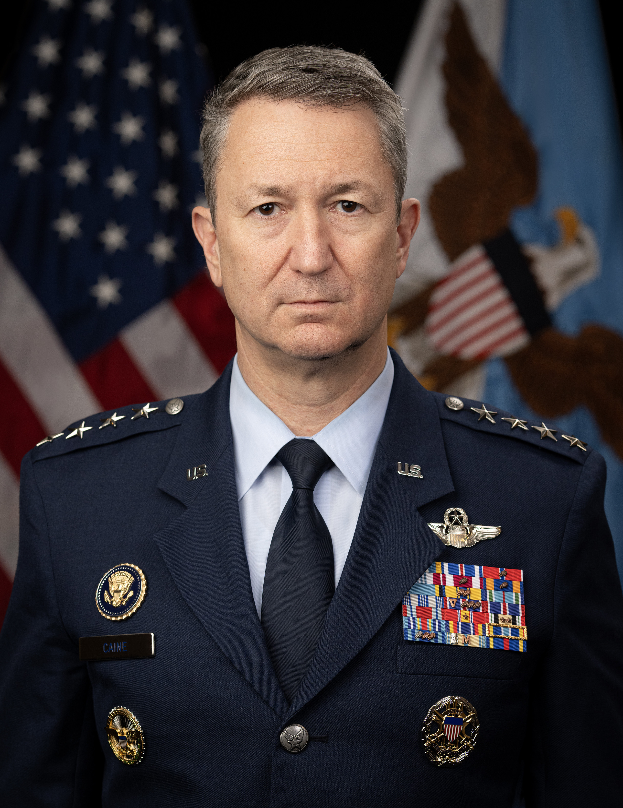

| Office of the Secretary of Defense | Military Departments | Joint Chiefs of Staff | Combatant Commands |
|---|---|---|---|
| Civilian side of the military | The military side (which also contains a civilian side) | Upper level management of military leadership | Focus on warfighting/planning |
| Secretary of Defense, Deputy, Assistant, and Under Secretaries | Army, Navy, Airforce, Space Force | Chair of the Joint Chiefs of Staff, Vice Chair, and other service chiefs | Made up of personnel from different service branches |
| Civilian offices and bureaues | Less about warfighting, more about recruitment, doctrine, and management | Principal military adviser to the president (CJCOS) | Focus on specific geographic or functional AOR |
US Foreign Policy
The Department of Defense and the Military
2025-09-10


Historical Background
James Forrestal
First Secretary of Defense
Former Secretary of the Navy
Resigned March 28, 1949

Defense Department Organization
Goldwater-Nichols Act of 1986
Greatest reorganization of the US military since National Security Act of 1947
Removed Joint Chiefs of Staff from the operational chain of command
Creates Vice Chair of the Joint Chiefs of Staff
Chain of command runs straight to combatant commanders:


Defense Department Organization
Secretary of Defense Pete Hegseth
- Retired US Army Major
- Former Fox News commentator


